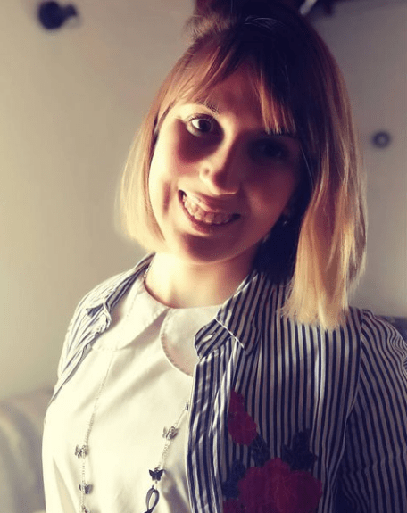
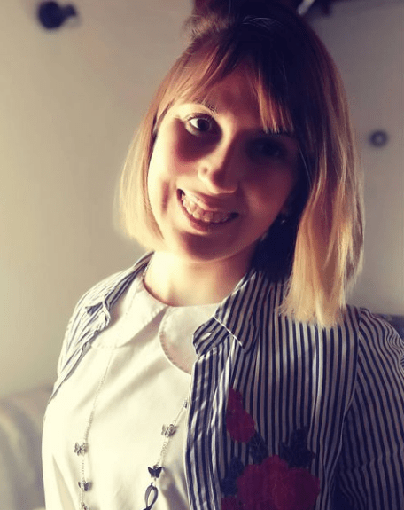

Mi nombre es Cintia Torres, tengo 28 años, soy de Miramar y soy Psicopedagoga. Inicié a estudiar en el año 2011, momento en dónde comenzó este gran amor por lo que hago. Cada día de estudio y esfuerzo valía la alegría ( y no la pena ) porque mis objetivos eran claros : acompañar y fortalecer a los niños que estuvieran atravesando situaciones complejas.
Luego de 4 años de estudio, comencé a trabajar en una escuela que quedaba a unos cuantos kilómetros de casa. Valía cada segundo en el colectivo porque al llegar esas caritas sinceras, llenas de ilusión, ternura y sueños estarían esperándome. Mi primer trabajo como psicopedagoga en el rol de Orientadora Educacional. Una hermosa experiencia en dónde aprendí muchísimo, más allá de los libros.
Al final de esa etapa, se abrió otra en dónde comencé a explorar y conocer el rol de la orientadora de aprendizajes en otra institución educativa que si bien quedaba dentro de mi ciudad, estaba ubicada en un lugar categorizado como desfavorable.
En este rol , mis expectativas de aprendizaje crecieron mucho. El vínculo con los niños era cada día más cercano, más fuerte , más esperanzador. Las situaciones que acontecían no eran color rosa pero aprendimos en equipo a pintar arcoiris. Muchos días de tristeza, de impotencia por no poder hacer todo lo que uno quisiera por esos chicos... pero siempre teniendo en mente la responsabilidad de velar por sus derechos, día y noche, sin importar nada más que ello.
Cinco años después , me despedí de esa escuela con el corazón mil veces más grande de lo que lo tenía y por supuesto, con muchos aprendizajes.
El año pasado titularice en el CEC de Miramar, aprendiendo mucho de nuestra modalidad de psicología.
Desde entonces decidí emprender nuevos caminos, mudandome a la ciudad de Tandil. Actualmente trabajo en una escuela primaria y apuesto a Espacio Alfa como un nuevo camino a recorrer en una modalidad de trabajo distinta , diferente a la grupal, a la escolar , para enfocarme en la individualidad de cada uno de los niños que necesiten acompañamiento y fortalecimiento en sus aprendizajes. ¡Apuesto a ver niños felices!